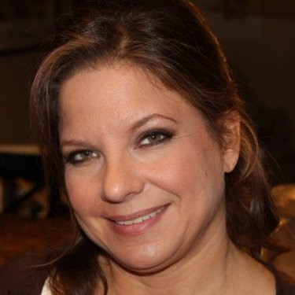

Laura Greenberg — Co-President

As Co-President and Chief Operating Officer, Laura is the heart and soul of the research standards that make Norman Hecht Research a leader in its field. Directing operations for the company, Laura oversees a team that coordinates, innovates and customizes each research study to specifically meet our client's needs.
One of Laura's strongest skills is taking our clients' strategic issues and concerns and customizing them into very actionable studies to meet our clients needs. Laura works closely with clients through the tough, but necessary editing process in order to create a questionnaire that truly addresses the specific strategic goals. In addition, Laura develops and writes the vast majority of proposals for clients.
Laura joined Norman Hecht Research in 1993 and has worked her way up the ladder from a Project Analyst, Project Manager, Chief Operating Officer to her current position as Co-President and Chief Operating Officer.
Laura began her career in retail management and outside sales, both of which helped instill in her a dedication to customer service.
Laura earned a BS in Retail Management from Syracuse University.